Cookbook (Examples)¶
Each recipe is a complete, runnable example. See the individual project documentation, linked in the menu at left, for detailed prose documentation and API specification.
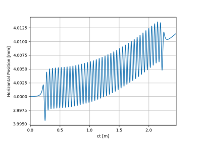
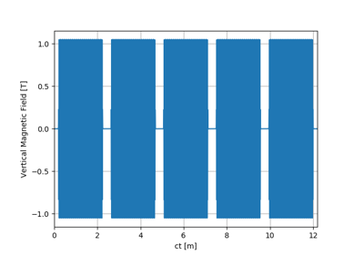
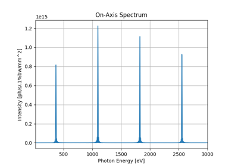
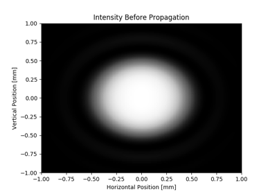
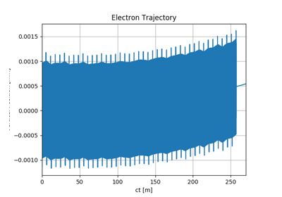
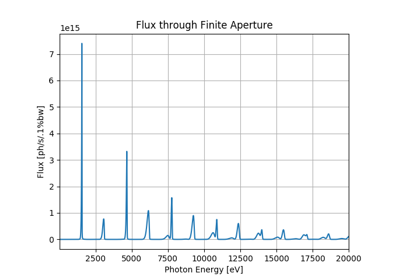
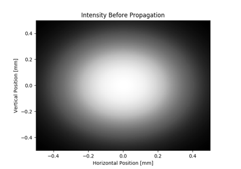
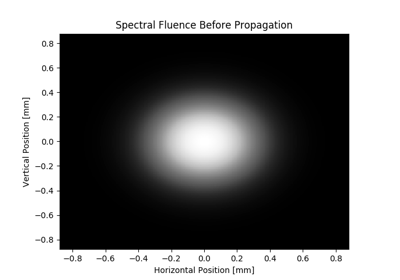
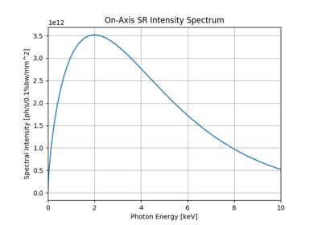
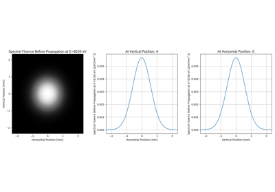
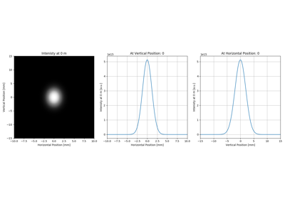
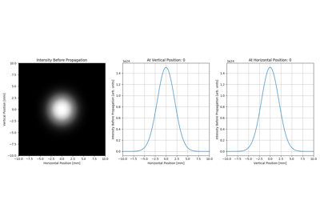